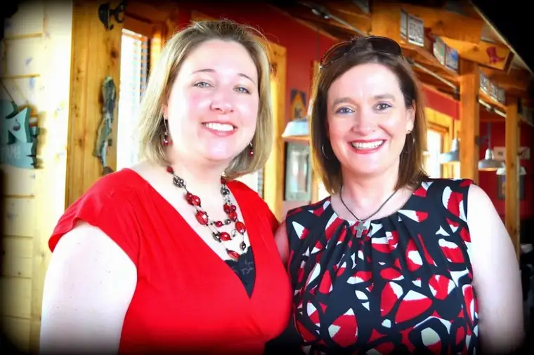

Meet my friend Lauren Muzyka!
 |
| Lauren Muzyka and me in Texas, summer 2013 |
{kind=link}
She may not like being called “glue,” but when it came to pulling together the book, “Redeemed by Grace,” there’s no way around it. Lauren = glue!
{kind=link}
Lauren paid a pivotal role in Ramona’s conversion story, and helped her make the potentially treacherous jump over to the pro-life side of the world from a place of darkness. When Ramona felt uncertain, Lauren assured her she was not alone.
After Ramona made her brave, life-changing decision, and when she began quietly sharing her story with a few others, and one suggested her story was book-worthy, Ramona looked around for the support she knew she would need to push forward on such a project. Because let’s face it. Many people think of writing a book, but few actually do it.
Lauren was the voice of optimism that said to Ramona, “I’m coming with you on this journey. Let’s figure this out together.” It was Lauren who talked to someone who talked to someone else who ultimately talked to me about working on this project.
And through that process of collaboratively writing Ramona’s story, Lauren was there in the background and, if needed, the foreground, too, to rally the troops and keep us both inspired and excited.
It’s true that it takes a team of people to bring a book to fruition. But in the case of “Redeemed by Grace,” I can honestly say it would not have happened if not for this positive, spirit-filled person of Lauren Muzyka, who helped keep our fires lit over and over again.
And in the middle of it all, Lauren founded a new non-profit organization to help people praying at abortion facilities to better respond to the women and men who are going in with the intention of ending their baby’s life.

Sidewalk Advocates for Life is filling a needed niche, compassionately, and saving lives in the process. Not surprisingly, it’s an effort that is growing by leaps and bounds, though its goal is to someday not be needed at all.
I had a chance to meet up with Lauren recently again in D.C., where she was part of the pro-life entourage. Lauren waited with me and others at the EWTN tent the morning of the March, hoping with me we’d get our turn to share about this project. When that chance slipped away, she immediately thought of positive responses.
{kind=link}
{kind=link}
{kind=link}
{kind=link}
The next day, I got to see Lauren again at the Students for Life of America conference, where she set up an informational booth about her organization and shared with the young people in attendance how they might make a difference by standing on the sidewalks and, prayerfully, being advocates for love and life.
{kind=link}
Lauren indirectly played a role in our book coming together in a variety of ways, but she also played a direct role, including through writing the foreword. It is Lauren’s voice the reader will first “hear” as she introduces her friend Ramona, and in a most beautiful way.
Along with the rest of this story, I am excited to share Lauren with you, and allow you to see how God has pulled together so many incredible souls to bring this story forward!
Q4U: Who is a bright light in your life this week?